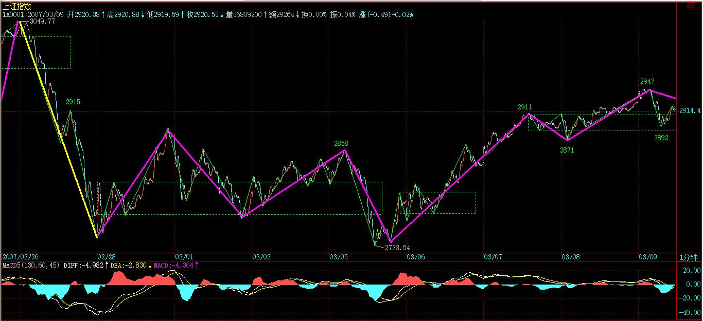
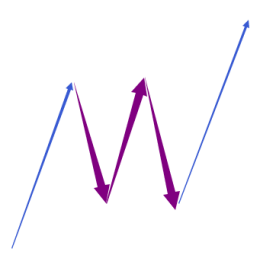
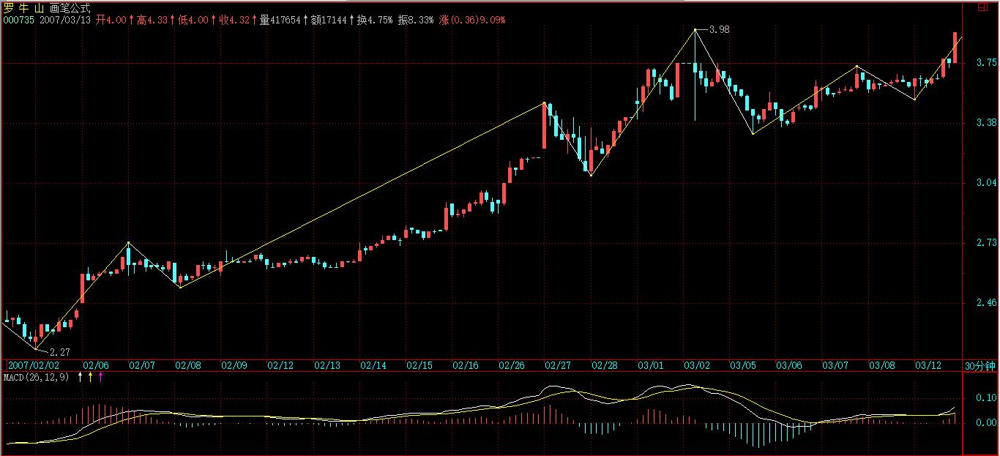
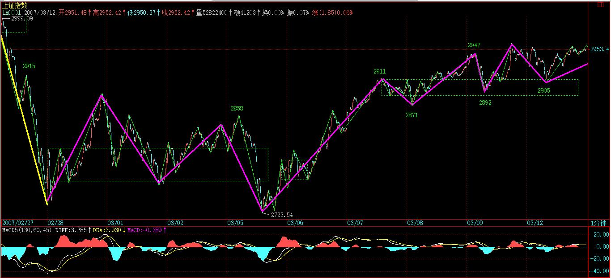

(2007-03-09 11:51:34)
下午，那媒体要开组建筹划会，本ID必须参加，先把帖子放上来。【韶山映山红】“那媒体”指《基金分析》杂志。】
大盘走势昨天已提示“现在依然存在重新跌回这5分钟中枢，从而扩展成新的30分钟中枢的可能，所以2915是不能有效跌破的，否则将扩展出新的30分钟中枢”。早上一典型的5分钟顶背驰让这情况变得天经地义。

昨天第三类买点后，理论上两种可能之一就是演化成大级别中枢，今天就是一经典演示。该中枢从7日13点多的2911算起，形成后，和前几天下面那30分钟中枢操作一样，市场又给一次相同类型的操作机会。【韶山映山红】中枢震荡操作。】
不多说，最近很忙，对大家照顾不周，抱歉了。
个人的理解能力之间相差太大，自然就有先后之别，因此用一堂课给基础差的同学补补课也是应该的，而且很多自以为基础好、明白的，看看也有益，有些细微处的理解也不一定能完全到位。
前面课程，最基础的无非两方面，一、中枢；二、走势类型及其连接。这两方面相互依存，如果没有走势类型，中枢也无法定义；而没有中枢，走势也无法分出类型。
如果理论就此打住，那么一个循环定义就不可避免。要解决该循环，级别的概念是不可缺少的。有了级别，一个严格的递归式定义才可以展开。
【韶山映山红】若禅精舍（陈秋明）：
所谓循环定义之类的说法，其根源就是对级别的理解有问题。走势类型要中枢来定义，中枢要走势类型来重叠构成，如果就此而终，那么这个相互嵌套的循环定义就形成了，但在此之外，对级别的定义，尤其是对最小级别的理论强制定义，解决了循环定义的问题。而理论上真正的最小级别，将可以追溯到每一笔成交背后的心理波动，这显然是不可观察的，而对于一个最终落脚在现实中的理论来说，一个可观察的最小级别定义是理论所必然需要。
】
所谓的最低级别，就如量子力学的量子概念，物理世界不是想当然地无限连续的，而市场的交易同样如此。最严格去定义，每笔的交易是最低级别的，连续三笔相同价位的交易，就构成最低级别的中枢。【韶山映山红】不是蛋生鸡、鸡生蛋的问题。不管哪种初始化，都是先解决中枢的定义。】
有一个最低级别中枢的走势，就是最低级别的盘整走势类型；有两个最低级别中枢的走势，就是最低级别的趋势走势类型，如果第二个中枢比第一个高，那就是上涨走势类型，反之就是下跌走势类型。【韶山映山红】没有中枢就没有走势类型。】
一般来说，假设依次存在着N（N>2）个中枢，只要依次保持着第N个中枢比N-1个高的状态，那么就是上涨走势类型的延续；依次保持着第N个中枢比N-1个低的状态，就是下跌走势类型的延续。【韶山映山红】趋势的延续性。】
显然，根据上面的定义，在最低级别的上涨里，只要也只有出现依次第N个中枢不再高于、即等于或低于第N-1个的状态，才可说这最低级别的上涨结束。【韶山映山红】不管有没有扩张升级或者转折发生，趋势延续的结束都是因为新生的中枢不满足趋势的定义。】
最低级别下跌的情况与此相反。
【韶山映山红】若禅精舍（陈秋明）：
这里所谓连续三笔价位重叠，也是理论上可成立，但实际操作中不必要这么细化的定义，这是按最严格定义来讲。除此之外，三根依次相邻有重叠部分的K线，也可以作为最小级别中枢，例如在日线图上，三根K线的重叠处往往都是五分钟中枢，这是长期递归联系过程中自然而然能够掌握的技巧，不需要特别去学习，原因很简单，要看细部结构，把图调整到五分钟周期的图就可以了。
】
上面就用最低级别的中枢把走势在最低级别上进行了完全分类，【韶山映山红】初始化得到最低级别的中枢，根据走势里面中枢的情况完全分类成上涨、下跌和盘整。】而三个连续的最低级别走势类型之间，如果发生重叠关系，也就是三个最低级别走势类型所分别经过的价格区间有交集，那么就形成了高一级别的缠中说禅中枢。【韶山映山红】递归生长。】
有了该中枢定义，依照在最低级别上的分类方法，同样在高级别上可以把走势进行完全的分类，而这个过程可以逐级上推，然后就可以严格定义各级别的中枢与走势类型而不涉及任何循环定义的问题。【韶山映山红】递归都是从低级别向高级别的方向进行的，正如这里说的“逐级上推”。那个出了几本书的某著名人物，把递归说成是高级别向低级别方向的分解，不知道他是文科生还是没有函数概念。】
但如果按严格定义操作，必须从最低级别开始逐步确认其级别，太麻烦也没多大意义，所以才有了后面1、5、15、30、60分钟，日、周、月、季、年的级别分类。在这种情况下，就可以不大严格地说，三个连续1分钟走势类型的重叠构成5分钟的中枢，三个连续5分钟走势类型的重叠构成15或30分钟的中枢等话。在实际操作上，这种不大严格的说法不会产生任何原则性的问题，而且很方便，所以就用了，对此，必须再次明确。【韶山映山红】真正的走势是递归出来的。用K线图的周期代替递归的级别，没有“原则性的问题”，而且简便、省事。】
以上这些，都在前面反复提到，但很多人好象还是糊涂，不妨最后再说一次。
显然，站在任意一个固定级别里，走势类型是可以被严格划分的。
例如，说一个5分钟的走势类型，显然不可能包含一个30分钟的中枢，因为按定义，一个单独的5分钟走势类型无论如何延续，也不可能出现一个30分钟的中枢。要形成一个30分钟的中枢，显然只能是3个以上5分钟走势类型的连接才可能。走势类型与走势类型的连接，这两个概念不可能有任何含糊的地方。
5分钟走势类型，必须包含也最多包含5分钟级别中枢，至于是1个还是5个，都不影响是5分钟走势类型，只不过可被分类成是5分钟级别的盘整类型还是趋势类型而已。
显然，一个高级别的走势类型必然就是由几个低级别的走势类型连接而成，但不一定都是次级别的走势类型，【韶山映山红】走势类型的连接是多级别共存】例如，a+B+b，B是30分钟中枢，由3个5分钟走势类型构成，a、b是1分钟走势类型，【韶山映山红】a+B+b，B是30分钟中枢，a、b是1分钟走势类型，B中枢是a中枢小转大之后的震荡形成的。】那么a+B+b这个30分钟走势类型就能分解成2个1分钟走势类型和3个5分钟走势类型的连接。
【韶山映山红】这里是第三次写成“a+B+b”。是笔误？还是意味着与“a+A+b”有什么不同？★以后研究。】
但我们还可以通过拆散重分，使得一个高级别的走势类型必然就是由几个次级别的走势类型连接而成，由于中枢里至少有三段次级别走势类型，所以就有了“缠中说禅走势分解定理二“：任何级别的任何走势类型，都至少由三段以上次级别走势类型构成。
【韶山映山红】若禅精舍（陈秋明）：
一分钟下跌，加30分钟中枢，加一分钟下跌，无论是这样的级别搭配，还是其他的级别搭配，都是总可以拆解为N个五分钟走势类型的连接，这里涉及后面的同级别分解内容。
对于同级别分解，其实有个很简单的原则。对于希望拆解的某级别走势类型，例如想拆解为都是五分钟级别走势类型，最终拆解后的走势图，都是由五分钟级别走势类型相互连接而成。这样的过程会遇到一个问题，就是有的走势可能比五分钟级别小，这些小级别的走势类型，就当做前面或后面一个五分钟级别走势类型的一部分。
同级别分解对于走势的拆分再组合，以及多义性的熟练程度有一定要求，很多时候拆解出来的图形看起来很别扭，这是正常的，但这种别扭会对操作造成一定影响，属于后期的一些技巧。新学者可以完全不用关心里面的理论定义以及具体拆解如何。
】
例如，还是上面a+B+b的例子，估计很多人怎么都看不出为什么这分解定理一定成立。其实，不妨假设B中有三段5分钟走势类型，分别表示为B1、B2、B3，那么a+B+b=a+B1+B2+B3+b=（ a+ B1）+B2+（B3+b），显然（ a+B1）、B2、（B3+b）都是5分钟走势类型，这就是该分解定理所说的东西。【韶山映山红】这里是第四次写成“a+B+b”。是笔误？还是意味着与“a+A+b”有什么不同？★以后研究。】
【韶山映山红】这里显示，所谓总能通过组合，使得a、b的划分成为5分钟走势，只是简单的拉郎配，把a、b搭配给相邻的5分钟走势。下图，紫色是5分钟走势，构成30分钟中枢。蓝色是1分钟走势。这就是我要说的，走势类型划分的时候，所谓的断层的问题，并不是每个级别的划分都是连续的，中间会夹杂很多低级别的走势碎片。这些走势碎片可以独立存在，也可以组合到其他部分。这种组合并不是全部打散了再做同级别组合。】

学过一点抽象代数的都容易理解上面的话，用抽象的话说，就是走势类型连接这种运算是符合结合律的。但走势类型的连接运算不符合交换率，这就是该运算的特别之处。【韶山映山红】从这句话来理解什么是缠论的结合律。就是走势片段可以自由拆解、自由组合成新的片段。★可以做个专题，以后研究。】
【韶山映山红】结合律是指运算的顺序不影响结果。交换律是指算子的顺序不影响结果。结合律：(a+b)+c=a+(b+c)，(a×b)×c=a×(b×c)。交换律：a+b=b+a，a×b=b×a。】
【韶山映山红】百度百科：抽象代数（Abstract algebra）又称近世代数（Modern algebra），它产生于十九世纪。伽罗瓦〔1811-1832〕在1832年运用「群」的概念彻底解决了用根式求解代数方程的可能性问题。他是第一个提出「群」的概念的数学家，一般称他为近世代数创始人。他使代数学由作为解方程的科学转变为研究代数运算结构的科学，即把代数学由初等代数时期推向抽象代数。抽象代数包含群论、环论、伽罗瓦理论、格论、线性代数等许多分支，并与数学其它分支相结合产生了代数几何、代数数论、代数拓扑、拓扑群等新的数学学科。抽象代数也是现代计算机理论基础之一。】
只要明白了走势类型连接运算的结合性，那就不难同时明白“缠中说禅走势分解定理一”：任何级别的任何走势，都可以分解成同级别“盘整”、“下跌”与“上涨”三种走势类型的连接。
其实，就像量子力学有多种数学的处理形式，本ID的理论，同样可以用抽象代数的方法来处理，只是那样的话，就更少人能看懂了。而抽象的方法，不仅简洁，而且更能暴露其实质。这些以后再说了，现在还是用比较简单的、类似几何的方法去理解吧。
注意，走势是客观的，而用什么级别去分析这走势却是主观的。
根据“缠中说禅走势分解定理一”，任何级别的任何走势，都可以分解成同级别“盘整”、“下跌”与“上涨”三种走势类型的连接，那么就意味着，按某种级别去操作，就等于永远只处理三种同一级别的走势类型及其连接。
还是上面a+B+b的例子，站在5分钟级别的角度，这里有三个走势类型的连接，站在30分钟级别的角度，就只有一个走势类型。【韶山映山红】这里是第五次写成“a+B+b”。是笔误？还是意味着与“a+A+b”有什么不同？★以后研究。】
那么，前面反复说的，确定自己操作的级别，就是确定自己究竟是按什么级别来分析、操作。
例如，5分钟级别上下上三段，意味着在5分钟级别上有2个底背驰、2个顶背驰，按买点买、卖点卖的原则，就有2次的完整操作；而按30分钟级别看，这里就没有买卖点，所以就无须操作。
【韶山映山红】若禅精舍（陈秋明）：
走势是客观的，但用什么级别去分析，以及用什么样的组合去分析，抑或用什么方式去操作，这些都是主观的。理论和走势本身都是客观的，像走势必完美就是走势所必然存在的客观事实，但用理论的是人，如何用理论属于人的主观选择。
操作级别的选择，对具体操作的过程，会有一些影响。主要体现在如果选择的操作级别很小，就容易出现被跳空所干扰的现象。例如2018年10月19日的沪指尾盘，一个线段内的顶背驰已经出现了，但第二天跳空上涨就完全破坏了这个顶背驰，而在市场合力不太好的情况下，第二天开盘就可能是下跌的，去完成至少一个下跌线段。但这种情况在高一点级别的操作上就不是问题，例如操作级别是五分钟的，那么这种跳空就可以完全不考虑了。
但大一些的操作级别，会出现其他一些棘手的情况。像这两天的沪指，一个线段上去七八个点，然后一个线段又下来两三个点，指数这种波动对个股的杀伤力是巨大的，指数下跌两个多点，个股很多都会下跌四五个点。显然，对于五分钟操作级别而言，这里的波动不需要考虑和操作，但在2449那里买进的筹码，其盈利可能已经缩水一半都不止了，那么究竟要不要操作？这对短线而言是很重要的事情。
】
从纯理论的角度，操作级别越低，相应的效率越高，但实际操作级别是不可能随意低的，而究竟按什么级别来分析、操作，和你的资金等具体条件相关。例如，T+1的情况下，按1分钟以下级别的操作，就面临着不能顺利兑现的风险，而系统的操作，要把所有可能的情况都考虑其中，因此完全按1分钟以下级别的操作是不可能的，除非是T+0。
此外，级别越小，平均的买卖点间波幅也越小，因此，那些太小的级别，不足以让交易成本、交易误差等相对买卖点间波幅足够小，这样的操作，从长期的角度看，是没有意义的。
所谓的交易误差，可以包括很多，例如你看见买点到你实际操作完成，必然有一个时间差，因此也就有了价位上的差别，这对于大级别无所谓，但对特小级别，那就需要特别精确，而这是不可能长期达到的。【韶山映山红】小级别的难点。】
【韶山映山红】若禅精舍（陈秋明）：
小级别的长期精确操作，理论上可行，实际操作上会有一大堆问题，这些体会对于没有这方面实践经验的人，是没有概念的。小级别的操作，通常被用在降成本的过程中，而那种操作对精度的要求是比较低的，但对操作的正确度有着较高要求。这方面的讨论，后面遇到有降成本操作方面的内容再探讨。
】
因此，根据各种情况，你就可以相应定好自己的操作级别，这样就可以按照相应的级别分析、操作。
也就是说，一旦该级别出现买卖点，你必须进入或退出。
也就是说，在你的操作级别上，你是不参与任何调整或下跌走势类型的。【韶山映山红】调整和下跌有什么区别？★以后研究。】
有人曾问本ID为什么2001年后四年都不看股票，那很简单，就因为在本ID的操作级别上出现卖点，所以就全部退出，等有相应买点再说。
制定了相应级别，是否按照次级别以下进行部分操作，那是操作风格问题，而实际上是应该安排这种操作的，特别当进入一个你的操作级别的次级别盘整或下跌，这是你可以忍受的最大级别非上涨走势，当然要操作一下来降低自己的成本。【韶山映山红】这里的盘整不是盘整走势类型。】
如果你的操作级别很大，那么其次级别的次级别，也可以用来部分操作的。
这样，整个操作就有一定的立体性，从而更降低其风险，也就是能进行把成本降低这唯一能降低风险的活动，只有当成本为0时，才算真正脱离风险。
【韶山映山红】若禅精舍（陈秋明）：
前面说过，缠论能够发挥最大效用的地方，就是大资金用来长线运作降低成本到零，由理论衍生的短线之类，会遇到很多理论以外的问题。像超短线，持股一天到两三天的，就操作风格考虑，就必须选择能够有较强势上涨的股票，而这依靠理论本身是解决不了的。此外，对第三买点的操作，在熊市和震荡市里面，需要理论以外的知识就更多了，震荡市里的三买往往会遇到下跌延伸的问题，或者第三买点转更大级别盘整的问题。其他买点也是一样的，同样结构的买点出现在不同股票上，其结果可以天差地别。但如果是长线运作，短线降低成本，这种方式的操作对以上这些问题都可以忽略。
这其实也是很多人明明严格按照理论操作，却无法实现稳定收益的原因，思路和方法绕在理论里面，形成照本宣科的教条主义，根源在于对理论缺乏更深层面的理解。
【韶山映山红】打短线，精度很重要，不能总是掐头去尾，那样会丰产不丰收。做长线，打短差，就可以降低精度要求，捡到篮子里都是菜，日子还长着呢。】
根据“缠中说禅走势分解定理”，很容易就证明“缠中说禅买卖点级别定理”：大级别的买卖点必然是次级别以下某一级别的买卖点。
这个证明很简单，具体就不写了，还用上面的例子来说明：【韶山映山红】上面的例子：a+B+b，B是30分钟中枢，a、b是1分钟走势。】
a+B+b=a+B1+B2+B3+b=（ a+B1）+B2+（B3+b），最后的（B3+b）形成30分钟的买卖点，那么自然其极限点在b上，对b进行分解，如果该极限点不是b的买卖点，那么就意味着b还没完成，还要延伸下去，那么这极限点自然也不会是（B3+b）的极限点，这就矛盾了。【韶山映山红】对a+B+b来说，B3和b是反向的走势，买卖点实际上出现在b段，为什么要把B3牵扯进来呢？以后研究。】
但注意，大级别的买卖点不一定就是次级别的买卖点，在这个例子里，b可以是1分钟级别的，就不是30分钟级别的次级别了。所以只能说是次级别以下某一级别的买卖点。这也是为什么有时候，有时候一个1分钟的背驰就会引发大级别下跌的原因。
在最规范的走势中，该大级别的买卖点刚好是下面所有级别的买卖点。【韶山映山红】最低级别的走势逐级递归出大级别走势，但是买卖点不是逐级递归的。“最规范的走势”才会有大级别的买卖点是所以以下级别的买卖点。也就是说，大级别的买卖点不是次级别买卖点的情况并不稀奇。要特别注意。】
当然，这还是一个很粗糙的定理，在以后的课程里，还有更精细的，这以后再说了。【韶山映山红】在次级别的走势没有完成的时候，更低级别的转折一起阶跃性的转折，如何分析其背后的动力学原理？★以后研究。】
【韶山映山红】若禅精舍（陈秋明）：
经过重新组合之后，aBb结构的走势，成为abc结构，而对背驰的分析，就是对c段的内部结构进行考察。在本文中，一分钟下跌加30分钟中枢加一分钟下跌，拆解为三段五分钟级别走势类型的连接，从而印证走势必完美的必然性，这个逻辑在文中是很明显的。
最规范的走势，是符合所有级别区间套顶底背驰的，然而这种走势在实际中并不容易见到。
】
有问题就请放下，晚上如果早回来再回答，不过还是先把帖子研究清楚再提问题，这样效率高点。
先下，再见。
2007-3-9 11:54
(2007-03-11 11:15:55)
今天还有三个会面，晚上回来，有时间再补今天的帖子，好消息是上传的网站好象可以了。先下，再见。
刚回来，写不了什么，上次周末音乐会29：没有音乐的声乐时代 还有欠帐补上，但网站不稳定，可能听有点困难。恰好看到“大盘”一些中枢相关图链接被新浪删了，本ID抢救上来，可以去看看，各位之间能互相帮助是最好的，本ID最近太忙，可能照顾不周。晚，下了，再见。
http://www.itai.org.cn/zsid/zs1.htm
http://www.itai.org.cn/zsid/zs2.htm
(2007-03-12 15:19:30)
子曰：三人行，必有我师焉：择其善者而从之，其不善者而改之。
杨伯峻：孔子说：“几个人一块走路，其中便一定有可以为我所取法的人：我选取那些有点优点而学习，看出那些缺点而改正。”
钱穆：先生说：“三人同行，其中必有我师了。择其善的从之，不善的便改。”
李泽厚：孔子说：“三个人一起走路，也定有值得我学习的老师，选择优点而学习，看到短处而改正自己。”
详解：
何谓三人？为何不是五、十人？二人呢？这些问题，大概从来没人能回答与正视过。
其实，所谓三人，指的是“君、父、师”，三类最值得尊重的人，“三人行”，与“君、父、师”同行。
人，要取法其上，难道和几个大淫贼同行，还“必有我师焉”？那是同性而不是同行。
如果按上面及通常解释，三人都是植物人，那你和三植物人同行，如何“必有我师焉”？植物人依然是人，那么其善者人如何从？其不善者又如何改？
这不是抬杠，而是原来的解释太愚蠢可笑。
“必有我师焉”，“必”，倘若；“有”，具有“；“师”，师法；“焉”，于此。
孔子更注重在现实的当下印证，而对“君、父、师”，孔子并不一味肯定，觉得一定要有可师法的地方，而是更强调，如果没有其他标准，是不能确认其善与不善。这个标准，只可能是当下的现实。
“君、父、师”，无论有什么理论和看法，都不可能脱离当下的现实成为永恒的准则，这样才存在后面“择”的可能。
与“君、父、师”同行，倘若有可以师法的地方，孔子给出如下的建议：“择其善者而从之，其不善者而改之”，“择”，选取，以当下的现实为标准选取，而不是根据自己的喜好、师承、派别去选取；“善”，完善；“从”，通“纵”，广泛；“从之” ，使之从，使善者广泛，将完善的在当下现实更广泛的范围中应用、检验；“改之”，使之改；将不善者在当下现实中不断修改完善。“改”，除了修改，还有强调“重新、再”的意思，这种修改不是一次性的，而是不断进行直到完善。
前两章说了“好学”对内圣外王的意义，本章更指出，站在“好学”的标准下，对“君、父、师”为代表的前人遗产，应该的态度是“择其善者而从之，其不善者而改之”，脱离这个前提，所谓师法，不过是尸法而已。而孔子、论语，永远活在鲜活的现实之中。
缠中说禅白话直译
子曰：三人行，必有我师焉：择其善者而从之，其不善者而改之。
孔子说：与“君、父、师”同行，倘若有让我师法的在此：选取他们完善的并在当下现实更广泛的范围应用、检验，选取他们不完善的并在当下现实中不断修改、完善。
（待续）
今天的大盘没什么可说的，今天上周五完成的30分钟中枢的延伸过程，只要5分钟的回试不跌破2911的中枢上沿，那么就要形成第三类买点，至于后面是形成中枢新生而延续上涨，还是中枢的扩展成日线级别，自然就走出来了，无须预测。还不会看图的，就看5日线，只要5日线不破，就是强势，就没问题。
各股也没什么可说的，以前说的板块都没问题，现在关键是心理面上的影响，对3000点有点心理阴影，慢慢修复。而汉奸也企图利用两会结束，人们普遍的见好就收心理发难，所以这方面的斗争还将延续。深圳由于接近外边，所以受的影响更大，也走得弱点，如果深圳重新走强，那问题就简单了。
汉奸做空也只为了买回来，现在世界上没有任何有实力的机构敢说完全放弃中国市场，别说5年，2年都不敢，这样，你说汉奸又能翻多大的浪？甚至一个周中枢都不一定给他们面子。
2007-3-12 15:20
[匿名] 草草 2007-03-12 15:31:13
老师:我用你的方法,去研究周线三买,然后加了个量能突破,发现很好用.谢谢老师,今天平均收益8%.是我今年最强的一次了
==
请继续努力，这只是开头，另外，会买还要会卖，这样才能逐步形成操作的节奏，慢慢就有感觉了。
2007-3-12 15:37
[匿名] 摄影之友 2007-03-12 15:34:56
博主:昨天看CCTV-2,春暖2007,各大企业为农民工小学捐款....里面的企业里有601111国航的李总...呵...怎么我看到他也会有种亲切的感觉呀....难道是因为他是老大你提过的人吗?我买过二次国航，它一次都没有亏待我。只是当时不懂，扔得太早了。：）：）：） 【韶山映山红】601111中国国航。】
==
我一个朋友的父亲是他的老首长，所以对这人比较了解。所以当国航跌破发行价时，才这么肯定说一定有戏，我可没问过他，只是知道其人的性格。【韶山映山红】“国航的李总”，李家祥。2000年11月去国航以前任沈阳军区空军副政委，少将军衔。】
2007-3-12 15:41
[匿名] 中间体 2007-03-12 15:36:48
今天的大盘没什么可说的，今天上周五完成的30分钟中枢的延伸过程，只要5分钟的回试不跌破2911的中枢上沿，那么就要形成第三类买点，
----------------------------
2911在哪里, 请缠姐指出.
==
3月7日，【韶山映山红】2911在哪里？在3月7日。】
这30分钟的中枢没有下面那个常见，这是一个奔走型的。【韶山映山红】奔走型：中枢B段幅度大，AC段重叠小。】
【韶山映山红】“这30分钟的中枢”是指2911开始的中枢。常见中枢的中枢区间是第二段走势的区间，整个中枢都参与表现回升或回踩、并且有二次确认的动作和过程，这是标准中枢形态。第一段和第三段重叠形成中枢区间的中枢不常见。】

2007-3-12 15:42
[匿名] 戈石 2007-03-12 15:38:11
女王好！
近来您忙什么大事呢？很好奇，能否透漏点儿？
==
先学好技术，这才是真正的大事。
2007-3-12 15:47
[匿名] mmhh 2007-03-12 15:45:27
缠MM好！
根据MM的理论，0735今天赚了10%。爽极了！谢谢缠MM. 【韶山映山红】000735罗牛山。】

==
关键是能长期坚持下去，不断总结提高。
2007-3-12 15:49
[匿名] 中间体 2007-03-12 15:45:36
缠姐, 为什么到目前位置还拿2911 是的中枢来判定.
而不拿临近的中枢呢??
==
这次上来就是两个中枢2858下面一个，2911下面一个，【韶山映山红】这里2858、2911都是中枢的ZG。】从而形成30分钟级别的上涨，【韶山映山红】这里两个中枢的GG和DD有重叠。不是趋势，也算是上涨。】现在的问题是这个上涨是否延续，还是最后演化成a`+B型。【韶山映山红】两个中枢的震荡区间有重叠，满足扩张升级的条件了。最终是形成扩张升级，还是原来级别的上涨，还要看后面的走势是否出现30分钟级别的回踩。】

2007-3-12 15:52
[匿名] 小小 2007-03-12 15:50:43
给妹妹道辛苦！
一直看妹妹的论语来着，才知道原先学者们的解释面目全非，真吓人！
妹妹，那从古至今，除妹妹之外，有没有解释得稍微好一些的？
==
康有为的好象和前人有所不同，不过本ID和他的没什么相同的地方。
2007-3-12 15:53
[匿名] 满目山河 2007-03-12 15:40:43
缠妹妹主导的传媒平台是什么？我对这个比股票更关心。
如果不方便说，就不必回答了：）
==
最近要出来，具体是什么，就没必要说了，反正枪炮一起对准汉奸。
2007-3-12 15:57
[匿名] 花儿 2007-03-12 15:42:47
我提议老师表扬一下“大盘”同学
==
给三朵大红花。希望各位之间都能互相帮助，本ID有时太忙，而且一个人也不可能应付所有人的问题。
2007-3-12 16:00
[匿名] 风云 2007-03-12 15:39:49
LZ好，请问，如果一段向上的走势，某天因除权而产生一个向下的跳空缺口，接下来形成一个中枢，这个中枢的第一段应该从哪算起，是否应把缺口处当作第一段，
==
缺口没什么特别的，你可以把除权缺口当成最低级别的下跌，新的中枢和一般下跌时形成新中枢的处理是一样。然后一切都按中枢的定义来看。
有些缺口就在原来的中枢下面不远处，这样，同样可以按第三类卖点来操作，【韶山映山红】刚开始的时候，怎么知道不会返回中枢？★以后研究。】特别那种假填权骗人进来的行情，一下就能发现。【韶山映山红】怎么样才能够“一下就能发现”？★★以后研究。】
2007-3-12 16:09
[匿名] smallfish 2007-03-12 16:00:52
缠姐姐，学了这么久的技术，发现心态还没整好，最近买卖不佳，请问002040，600196，明天找买点切入，可否中线持有？想歇一段，调整一下心态
==
注意，任何一次失误都要马上总结，不能连续失误再调整。如果真的出现连续失误，那就是你的方法有很大问题，必须改进，好好想好再操作。
方法的问题无非几种：参与过小级别的操作、没有按买卖点操作，参照过于频繁、对图形判断不熟练、有盲点、乱听消息等等。先把问题找出来，究竟是什么问题。
注意，失误的原因永远与市场无关，找原因，只能找自己的原因。
2007-3-12 16:13
[匿名] 后知后觉 2007-03-12 16:07:16
强烈呼吁：
禅主：
最近有些迷惑，连以前学的也有些吃不准了。
希望您花一点时间，把最近的走势，从5分钟到30分钟都给说一次，中枢在哪里形成，怎么上去，怎么盘整的。接下来是怎么判断。
学的东西有些回退。希望禅主给一次清晰的讲解。
群里很多同学也跟我一样。
谢了！
==
每天都在说，像8日2871形成第三类买点，然后上去最后扩展成30分钟中枢，那天还特意中午上来发帖子，告诉新的中枢是从7日的2911算起。

注意，本ID的话都是有针对性的，当下的指出才是最有学习效果的，现在回头看，又变成理论干巴巴的分析。当下的理解，你整个身心都会关注着，这样的理解对形成直觉是有好处的。
任何走势都逃不过本ID的理论，大盘每天的走势就是免费的、最鲜活的教程。你必须随时能回答，现在大盘在干什么，例如，今天整天就对2911中枢上的震荡，早上的跳水看似恐怖，但却在2911附近止住，证明其向上的动力还是强的。但由于没在2911之上，所以还不能算是第三类买点。然后又是一个5分钟的上去，明天只要任何5分钟的回拉不跌破2911，又形成新的第三类买点。

但后面并不意味着一定继续上扬，特别是第二个中枢后，演化成更大级别的中枢，也就是日线中枢的可能是存在的。这一切不用预测，当下看就可以。
2007-3-12 16:28
[匿名] 袖手旁观 2007-03-12 16:28:13
缠中说禅 2007-03-12 16:16:06
对，第二个30分钟中枢从2871到2911。这次上来的走势，如同标准的教科书，好好仔细研究中枢的扩展、延伸等问题。
——————————————
低点为什么是2871？我一直当是2892
==
对不起，写错了，是2892【韶山映山红】2871是DD，2892是ZD。】

2007-3-12 16:29
为了不引起误解，把原来的去掉，再发一遍，原来把中枢的结束位置写错了，
[匿名] 酒吧心情 2007-03-12 16:12:33
对于奔走型,我常识着说下自己的看法.
就是不断的进行中枢延伸.......然后一旦有突破中枢,然后回抽不破最高点ZG, 就说明有第三买点,对于大盘来说,就是上攻.
现在关键就是对ZG的判断,从2911来看的话,应该是从第一段的那个最高点算的.
不知道JJ的意思如何.
请JJ 明教
==
对，第二个30分钟中枢从2892到2911。这次上来的走势，如同标准的教科书，好好仔细研究中枢的扩展、延伸等问题。

2007-3-12 16:31
悠悠悠哉 2007-03-12 16:26:39
我仍的是不是就是 你说的那种奔走型的 向上突破了？
==
奔走型向上，就是第二段特别高，第三跌跌破一点第一段高点那种。

2007-3-12 16:33
注意，由于回答问题很多，偶尔出现错误是很正常的，特别一些数字的错误，有发现的请提出来，免得影响各位的判断。总之，一切都按本ID给的定义来。
2007-3-12 16:35
[匿名] 小小 2007-03-12 15:50:43
给妹妹道辛苦！
一直看妹妹的论语来着，才知道原先学者们的解释面目全非，真吓人！
妹妹，那从古至今，除妹妹之外，有没有解释得稍微好一些的？
==
康有为的好象和前人有所不同，不过本ID和他的没什么相同的地方。
[匿名] 小小 2007-03-12 16:07:20
那妹妹的论语啥时候出版啊？要是暂时不出，俺只好老老实实自己打印下来学习了，特别要推荐给我上大学的女儿，一起学习！
==
明年吧，今天写不完。
2007-3-12 16:36
本ID的论语解释中有些开玩笑的段落，不适宜20岁以下人群，所以给20岁以下人群看时，最好适当把无关紧要的地方删掉。
2007-3-12 16:38
快5点，要下了，再见。
2007-3-12 16:40
本课目录
教你炒股票35：给基础差的同学补补课对不起，太忙，马上要外出。《论语》详解：给所有曲解孔子的人（56）子曰：三人行，必有我师焉：择其善者而从之，其不善者而改之。